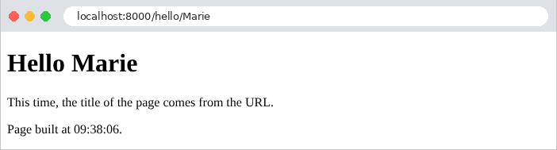
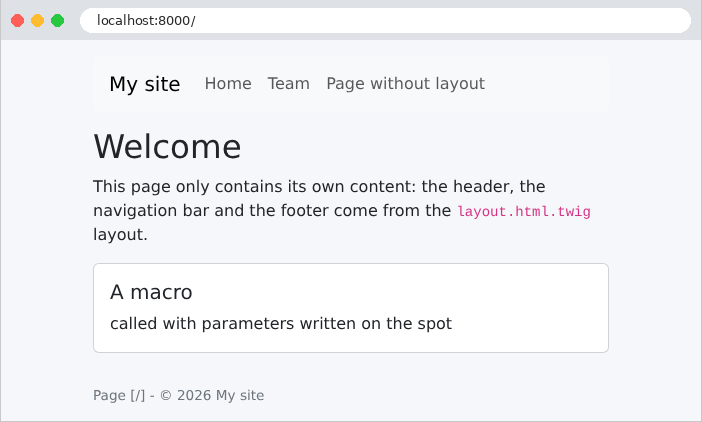
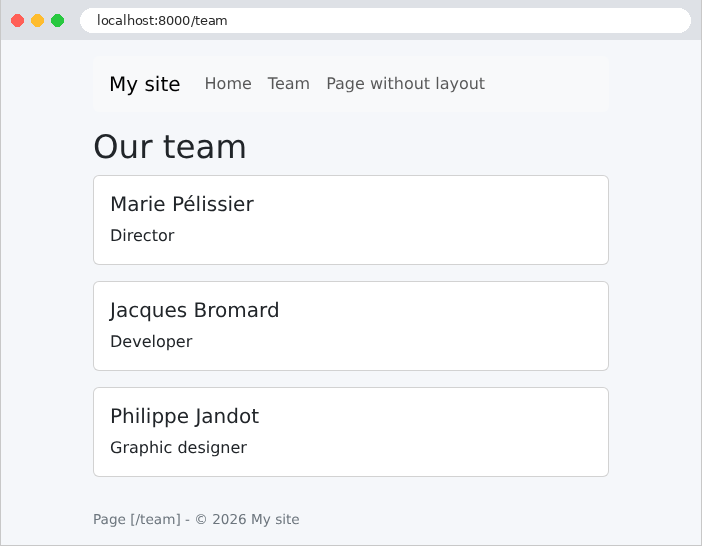
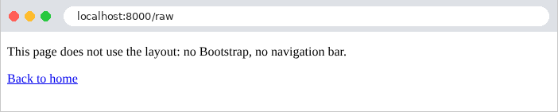
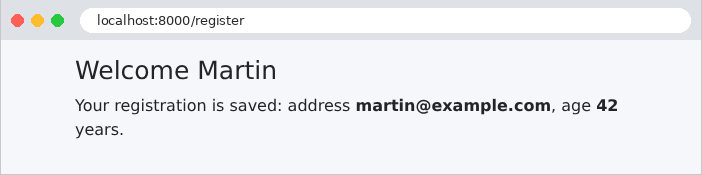
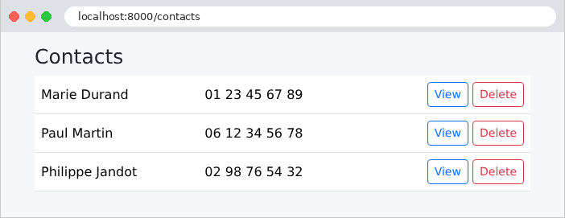
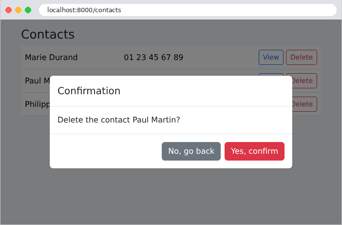
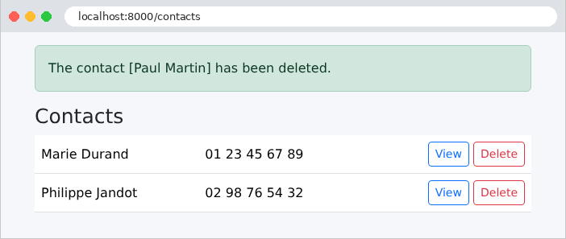

4. A view e seu modelo
Até aqui, as ações geravam suas próprias respostas: texto, JSON e algumas tags HTML escritas como string. Em uma aplicação MVC, esse é o papel de uma view: um arquivo que descreve o HTML da página, com marcadores de posição para os dados que a ação lhe passa, o modelo da view.
[Symfony] usa a engine de views [Twig], criada pela mesma equipe. Uma view [Twig] é um arquivo cujo nome termina em [.html.twig] (o formato de saída, seguido da engine), armazenado na pasta [templates] da aplicação. É um arquivo de texto, neste caso HTML, no qual três tipos de tags são interpretados no servidor:
- [{{ expression }}]: o valor de uma expressão, inserido na página;
- [{% instruction %}]: uma instrução (tag); uma condição ([{% if %}]); um laço ([{% for %}]), a herança de templates ([{% extends %}], [{% block %}]), a inclusão ([{% include %}])...;
- [{# comment #}]: um comentário, que não aparece na página gerada.
Todo o resto é copiado como está. As expressões não são escritas em [PHP], mas na linguagem do [Twig], que é mais simples e mais segura: [model.title] refere-se à propriedade [title] do objeto [model] (ou ao seu método [getTitle()], ou à chave [title] de um array: o [Twig] procura por conta própria); os filtros transformam um valor ([name|upper] coloca um nome em maiúsculas); as funções realizam cálculos ([path('home')] gera uma URL). [Twig] assemelha-se, assim, ao [Jinja2] ([Flask]), do qual tirou inspiração, ou à engine do [Django]; ele difere do [Blade] ([Laravel]) e do [Razor] ([ASP.NET Core]), que combinam HTML com código da linguagem hospedeira. Uma view [Twig] não pode executar código [PHP] arbitrário: ela só pode exibir os dados que lhe são fornecidos. Isso é proposital: a lógica da aplicação permanece nas classes. Uma view não é interpretada a cada requisição: no primeiro uso, o [Twig] a compila em uma classe [PHP], armazenada na pasta [var/cache/dev/twig], que ele reutiliza enquanto a view não for alterada. Veremos a aparência desse arquivo.
4.1. Exemplo 13: uma primeira view
4.1.1. A configuração: config/bundles.php e config/packages/twig.yaml
O [Twig] é integrado ao [Symfony] por meio de um bundle, o TwigBundle, que deve ser adicionado à lista de bundles da aplicação (Exemplo 01):
e configurar:
A única chave especifica a pasta das views: [templates], localizada na pasta do projeto. Esse também é o valor padrão. Em um projeto padrão, esses dois arquivos são criados pelo [Symfony Flex] quando se instala o [Twig] ([composer require twig], veja a introdução).
4.1.2. O modelo da view: src/Model/PageModel.php
O modelo da view é uma classe simples e imutável (veja o Exemplo 03): as três informações que a view exibirá. Não há obrigação de definir o modelo de uma view como uma classe: três variáveis separadas poderiam ser passadas à view. No entanto, uma classe documenta o que a view espera e permite que o editor verifique o código da ação. Essa é a abordagem que o estudo de caso seguirá, em que cada view importante tem sua própria classe de modelo.
4.1.3. O controller: src/Controller/ViewsController.php
- Linhas 20–23: a ação constrói o modelo da view. A função [date], derivada do [PHP], formata a hora atual: [H] formata as horas, [i] formata os minutos e [s] formata os segundos;
- Linha 24: o método [render] de [AbstractController] instrui o [Twig] a gerar a página. O primeiro parâmetro é o nome da view: o caminho do arquivo, relativo à pasta [templates]. O segundo parâmetro é um array associativo, em que cada chave se torna uma variável na view; neste caso, uma só: [model]. [render] retorna um objeto [Response], cujo corpo é a página gerada (do tipo [text/html]);
- linhas 31–35: outra view, com outra variável ([name]). O terceiro parâmetro de [render] é uma resposta a ser preenchida: neste caso, uma resposta 404 para uma página de erro personalizada. [new Response(status: ...)] passa o código por meio de um parâmetro nomeado, enquanto os demais parâmetros mantêm seus valores padrão;
- Linhas 36–40: a mesma view da ação [index], mas com um modelo diferente. Essa é a vantagem de separar ações e views: uma única view pode ser usada por várias ações.
4.1.4. A view: templates/views/index.html.twig
- linha 5: um comentário [Twig];
- linha 6: [{{ model.title }}] insere o valor da propriedade [title] da variável [model]. O ponto é o operador de acesso do [Twig], onde o [PHP] escreve [$model->title].
Tudo o que é inserido por [{{ }}] é escapado: os caracteres [<], [>], [&], ["] e ['] são substituídos por suas entidades HTML. Esse é o papel que a função [htmlspecialchars] desempenhava no Exemplo 09, mas agora de forma automática: uma view, portanto, não pode inserir inadvertidamente na página o HTML fornecido por um usuário.
4.1.5. A view: templates/views/unknown.html.twig
Uma view não precisa receber um objeto: a variável [name] é uma string.
4.1.6. Execução


A hora exibida corresponde ao fuso horário configurado no [PHP] (a diretiva [date.timezone] no arquivo [php.ini]), que neste caso é o Tempo Universal Coordenado (UTC); o estudo de caso mostrará como defini-lo para a aplicação. A resposta bruta mostra o trabalho realizado pelo [Twig]: as tags [{{ }}] foram substituídas por seus valores, e o comentário foi removido.
A página de erro “home”, seguida de um nome que contém HTML ([<b>martin], codificado na URL):
A tag [<b>] foi escapada, embora nem a ação nem a view tivessem qualquer relação com isso (o apóstrofo também foi escapado: [']). Eis, finalmente, a view compilada pelo [Twig], como encontrada na pasta [var/cache/dev/twig] (sob um nome gerado, como [f1/f1e0ff0a8a0dc68657a0b1aa94f3ef4b.php]), reduzida ao essencial:
A view se tornou uma classe chamada [PHP], cujo método [doDisplay] gera a página peça por peça ([yield]). Cada [{{ model.title }}] virou uma chamada a [CoreExtension::getAttribute] (que procura a propriedade, o método ou a chave [title]), passada ao método [escape] (escape). Uma view [Twig] é, portanto, simplesmente uma forma mais segura e mais legível de escrever um arquivo [PHP] que gera HTML.
4.2. Exemplo 14: a linguagem Twig
Este exemplo combina as principais construções do [Twig] em uma única view.
4.2.1. O modelo e a ação
O modelo da view é definido por três classes imutáveis, cada uma em seu próprio arquivo (o [PHP] não exige uma classe por arquivo, mas o class loader do [Composer] procura a classe [App\Model\Product] no arquivo [src/Model/Product.php]):
O modelo contém valores de vários tipos: strings, [null], booleanos, arrays de objetos, arrays vazios e objetos que contêm outros objetos. Os preços aqui são do tipo [float], para simplificar os cálculos na view (o Exemplo 06 mostrou por que preferimos centavos inteiros).
A ação constrói o modelo usando parâmetros nomeados (veja o Exemplo 02): cada valor é precedido pelo nome do parâmetro a que se destina, o que torna a chamada legível apesar do número de parâmetros.
4.2.2. A view: templates/basics/index.html.twig
- Linhas 9–10: a instrução [{% set %}] cria uma variável na view. O preço total é calculado pelo filtro [reduce], que reduz um array a um único valor (como [array_reduce], exemplo 06): sua função recebe o valor acumulado e o elemento atual; [(sum, p) => sum + p.price] é uma arrow function do [Twig]. O filtro [length] retorna o número de elementos de um array (ou de caracteres de uma string). Esses cálculos devem ser reservados à apresentação: o cálculo normalmente pertence à ação;
- linha 15: um valor [null] é exibido como uma string vazia. O filtro [default] substitui um valor vazio (ou ausente) por um valor padrão;
- linhas 17–18: [{{ }}] escapa o HTML (2a); o filtro [raw], por outro lado, insere o valor como está, sem escapá-lo (2b). [raw] é reservado ao HTML gerado pela própria aplicação, nunca a entradas do usuário;
- Linhas 20–24: uma condição: [{% if %}], [{% elseif %}], [{% else %}], [{% endif %}]. Cada bloco é fechado por uma instrução [{% end... %}];
- Linhas 28–34: um laço [{% for ... in ... %}] ... [{% endfor %}]. Dentro do laço, a variável especial [loop] descreve o estado do laço: [loop.index0] (o número da iteração, começando em 0), [loop.index] (começando em 1), [loop.first], [loop.last] (verdadeiros na primeira e na última iteração), [loop.length] (o número de elementos). As variáveis externas ao laço ([model.name]) continuam acessíveis;
- linha 30: o operador ternário [condition ? a : b] (o [Twig] também aceita [condition ? a], que retorna uma string vazia se a condição for falsa);
- linha 38: um laço [for] pode ter um bloco [{% else %}], que é executado se a lista estiver vazia. Isso é mais simples do que um [{% if %}] que verificasse o tamanho da lista;
- linhas 41–42: expressões calculadas ([total / count]) e as variáveis de [set]. O filtro [number_format] formata um número: duas casas decimais, um ponto como separador decimal e uma vírgula como separador de milhares. No Exemplo 16, veremos uma forma muito melhor de formatar números e valores;
- linha 44: o ponto percorre objetos ([model.address.city]), e o filtro [upper] coloca uma string em maiúsculas (tratando corretamente os caracteres acentuados);
- linha 46: a instrução [{% verbatim %}] copia seu conteúdo sem interpretá-lo: isso é útil quando uma página contém chaves destinadas a um framework [JavaScript].
[Twig] tem cerca de cinquenta filtros ([lower], [capitalize], [trim], [join], [split], [slice], [sort], [date], [json_encode], [escape]...), cerca de quinze funções ([range], [min], [max], [random]...) e testes ([is defined], [is empty], [is null], [is iterable], [is even]...); os bundles do [Symfony] acrescentam alguns ([path], [asset], [form_row], [is_granted]...), e a aplicação pode escrever os seus próprios (Exemplo 16).
4.2.3. Execução

A página gerada:
Os comentários e as instruções desapareceram, mas deixam seus espaços: o [Twig] remove a quebra de linha que segue uma tag, mas não a indentação que a precede. Isso não tem efeito: o navegador ignora esses espaços. (Um hífen dentro de uma tag, como [{%- ... -%}] ou [{{- ... -}}], removeria o espaço em branco ao redor dela.) Um número [float] inserido na página é escrito com ponto decimal ([12.5]); [number_format] usa os separadores que lhe são passados.
4.3. Exemplo 15: templates, fragmentos, arquivos estáticos
As páginas de um site geralmente compartilham a mesma estrutura: um cabeçalho, uma barra de navegação, um rodapé e as mesmas folhas de estilo. Em vez de repetir essa estrutura em cada view, ela é escrita uma só vez em um template (layout), que as páginas estendem. Este exemplo também usa o [Bootstrap], o framework CSS mais utilizado, para o layout.
4.3.1. Arquivos estáticos
Uma página HTML referencia outros arquivos: folhas de estilo, scripts [JavaScript] e imagens. Esses arquivos, que o servidor envia como estão, são chamados de arquivos estáticos. Com o [Symfony], eles ficam na pasta [public], que o servidor web serve como estão (exemplo 01): o arquivo [public/css/styles.css] está disponível na URL [/css/styles.css], sem que o [Symfony] seja envolvido.
Algumas regras CSS adicionais, além do [Bootstrap]: um fundo cinza-claro, o estilo do rodapé e o estilo de uma área de erro que será usada nos exemplos seguintes.
[Bootstrap] é usado nos exemplos 15 a 28. Em vez de colocar uma cópia na pasta [public] de cada usuário, os exemplos o compartilham: ele fica na pasta [examples/common/bootstrap]. Essa pasta não é servida pelo servidor web: um controller, compartilhado por todos esses exemplos, serve seus arquivos. Este é o arquivo [examples/common/BootstrapController.php]:
- linha 7: a classe está no namespace [Common], que o arquivo [examples/composer.json] associa à pasta [examples/common] (veja a introdução): o class loader do [Composer] a encontra, portanto, independentemente do exemplo;
- Linhas 16–17: uma rota cujo parâmetro [{file}] aceita qualquer final de caminho, inclusive barras (exemplo 02): a URL [/bootstrap/css/bootstrap.min.css] refere-se ao arquivo [css/bootstrap.min.css] da pasta. A rota se chama [bootstrap];
- Linhas 20–27: servir arquivos designados por uma URL exige cautela: uma URL como [/bootstrap/..%2F..%2F15-layout%2F.env] (em que [/] é codificada como [%2F]) não deve dar acesso a um arquivo localizado fora da pasta. A função [realpath] do [PHP] calcula o caminho absoluto de um arquivo, eliminando seus componentes [.] e [..], ou retorna [false] se o arquivo não existir. Verificamos que o caminho resultante começa com o caminho da pasta ([str_starts_with]) e que ele se refere a um arquivo ([is_file]); caso contrário, um erro 404 é retornado. [DIRECTORY_SEPARATOR] é o separador de caminhos do sistema: [\] no [Windows], [/] nos demais;
- linhas 29–32: um objeto [BinaryFileResponse] é uma resposta que envia o conteúdo de um arquivo. O tipo de conteúdo é determinado com base na extensão do arquivo (fornecida por [pathinfo]), de modo que uma folha de estilo seja corretamente declarada como [text/css]: um navegador rejeita uma folha de estilo declarada com outro tipo.
Cada exemplo que usa o [Bootstrap] declara esse controller como um serviço em seu arquivo [config/services.yaml]:
- linha 11: o serviço [Common\BootstrapController], sem configuração específica ([~] é o valor de [null] em [YAML]): ele recebe a configuração de [_defaults], e [autoconfigure] o transforma em um controller, cuja rota se junta às da aplicação (exemplo 02).
4.3.2. O template: templates/layout.html.twig
- linha 6: a tag [viewport] instrui os navegadores móveis a exibir a página na largura da tela, que é o que o [Bootstrap] espera;
- linha 8: a diretiva [{% block %}] marca um slot nomeado, que as páginas que estendem o template podem preencher definindo um bloco com o mesmo nome. O conteúdo escrito entre [{% block title %}] e [{% endblock %}] é o conteúdo padrão do espaço reservado, usado por uma página que não define esse bloco. [site_name] é uma variável global, presente em todas as views (veja [config/packages/twig.yaml], abaixo);
- linhas 10–11: a função [path] gera a URL de uma rota nomeada (exemplo 04), a partir dos valores de seus parâmetros, que são fornecidos em um array associativo do [Twig] ([{file: '...'}], o equivalente de [['file' => '...']] em [PHP]). A função [asset] gera a URL de um arquivo da pasta [public]. Escrever as URLs dos arquivos manualmente ([/css/styles.css]) também funcionaria, mas [path] e [asset] continuarão funcionando se a aplicação for instalada sob um prefixo de URL;
- linha 16: [{% include %}] insere o conteúdo de outra view, neste caso a barra de navegação. A view incluída tem acesso às variáveis da view que a inclui;
- linha 19: o espaço que cada página preenche com seu próprio conteúdo;
- linha 23: a variável [app] está presente em todas as views: o [Symfony] armazena nela a requisição atual ([app.request]), a sessão ([app.session]), o usuário autenticado ([app.user], veja a seção sobre segurança), o nome da rota ([app.current_route])... [app.request.pathInfo] é o caminho da URL solicitada. O filtro [date] formata uma data; a string ['now'] designa a hora atual.
A classe [container] do [Bootstrap] centraliza o conteúdo e limita sua largura; [py-3] adiciona uma margem interna vertical (padding): o [Bootstrap] oferece centenas de classes desse tipo, que são combinadas no atributo [class]. A variável global [site_name] é declarada na configuração do [Twig]:
As variáveis sob a chave [globals] são adicionadas a todas as views sem que as ações precisem fornecê-las. Uma variável global também pode ser um serviço (['@App\Service\...']), cujos métodos serão chamados pelas views.
4.3.3. A barra de navegação: templates/fragments/navbar.html.twig
Um fragmento: um pedaço de página que não faz sentido por si só. As classes [navbar], [navbar-brand] e [nav-link] são as da barra de navegação do [Bootstrap]. Os links são gerados por [path], com base nos nomes das rotas.
4.3.4. Uma macro: templates/macros.html.twig
- Linha 4: uma macro é um trecho de página que tem parâmetros; essa é a função do [Twig]. Ela é declarada por [{% macro name(parameters) %}] ... [{% endmacro %}]; um parâmetro pode ter um valor padrão ([role = '']). Um arquivo pode conter várias macros. O card ([card]) é um componente do [Bootstrap].
Uma macro só pode acessar seus próprios parâmetros (e as variáveis globais); ela não pode acessar as variáveis da view que a chama. É isso que a torna reutilizável. (A biblioteca [Symfony UX Twig Component] oferece componentes mais completos, que são classes [PHP] associadas a uma view e usadas como tags HTML: [<twig:Card name="..." />]; não precisaremos deles.)
4.3.5. As páginas
- linha 2: a página estende o template: o [Twig] gera a página do template, substituindo seus blocos pelos definidos pela página. Em uma view que estende um template, todo o conteúdo deve estar dentro de blocos: o texto escrito fora deles não aparece na página gerada;
- linha 4: [{% import %}] importa macros de um arquivo sob um nome à sua escolha ([m]);
- linhas 6–12: o bloco [content], que preenche o slot de mesmo nome. A página não define o bloco [title]: o slot mantém seu conteúdo padrão, “Home”;
- linha 11: a chamada à macro [card], como função: [m.card(...)], dentro de [{{ }}], já que ela produz texto a ser inserido. Sua saída não é escapada uma segunda vez: o [Twig] sabe que ela já está protegida contra HTML (seus parâmetros, porém, foram escapados dentro da macro).
- linha 4: o bloco [title], em uma única linha;
- linhas 8–15: um card por membro da equipe, em uma grade do [Bootstrap] ([row], [col-md-4]: três colunas em uma tela média ou grande, uma coluna em uma tela estreita);
- linha 12: os parâmetros da macro são expressões arbitrárias.
O controller não contém nenhuma novidade:
Por fim, a terceira página não usa o template:
4.3.6. Execução



A página da equipe, como recebida pelo navegador:
O navegador recebeu uma página completa: o template, o fragmento, a página e as macros foram montados no servidor. As URLs das folhas de estilo foram geradas por [path] e [asset]: são URLs relativas ao site. Você pode verificar se as folhas de estilo estão sendo servidas corretamente (a opção [-I] do [curl] exibe apenas os cabeçalhos da resposta):
O primeiro arquivo foi enviado pelo nosso controller ([BinaryFileResponse] acrescenta a data de modificação do arquivo e permite que ele seja armazenado em cache: [Cache-Control: public]); o segundo foi enviado diretamente pelo servidor de desenvolvimento, sem passar pelo [Symfony]. Por fim, uma tentativa de sair da pasta:
(As opções [-s -o /dev/null -w "%{http_code}\n"] exibem apenas o código da resposta; no [Windows], digite [-o NUL]).
4.4. Exemplo 16: extensões do Twig
Uma view muitas vezes precisa formatar valores: um valor monetário com sua moeda, uma data escrita por extenso ou um texto em maiúsculas. Esse código não pertence à ação (que não cuida da apresentação), e o [Twig] não permite escrevê-lo na view (que não pode executar [PHP]; veja a introdução deste capítulo). Ele é escrito em [PHP], em uma extensão do [Twig]: uma classe que adiciona seus próprios filtros, funções ou testes à linguagem das views. Bibliotecas fornecem extensões prontas, como [twig/intl-extra], instalada com os exemplos, que formata datas e valores monetários de acordo com o idioma. Por fim, as macros criam trechos de HTML (Exemplo 15).
4.4.1. A extensão: src/Twig/FormatsExtension.php
- Linha 14: uma extensão do [Twig] herda da classe [AbstractExtension]. Ela é um serviço, como toda classe da pasta [src]; o [Symfony] a reconhece como uma extensão ([autoconfigure]) e a repassa ao [Twig];
- Linhas 17–19: a extensão precisa do idioma da requisição atual. Ela recebe a pilha de requisições ([RequestStack]), um serviço do [Symfony] que conhece a requisição atual (há uma pilha porque uma requisição pode disparar outra internamente);
- linhas 22–28: o método [getFilters] retorna os filtros da extensão: para cada um, seu nome nas views e a função que o implementa. [$this->money(...)] (com as reticências) não chama o método: ela o transforma em um valor, uma função que pode ser chamada mais tarde (um first-class callable). Uma extensão também pode fornecer funções ([getFunctions]) e testes ([getTests]);
- linhas 33–37: formatação de um valor recebido em centavos (veja o Exemplo 06). Isso depende do idioma: em francês, [1 149,90 €] (espaço para separar os milhares, vírgula decimal, símbolo depois do valor); em inglês, [€1,149.90]. A classe [NumberFormatter], parte da extensão [intl] do [PHP], oferece suporte às convenções de todos os países (ela usa dados do projeto Unicode CLDR): é criada para um idioma e um estilo (aqui, [CURRENCY], para valores monetários), e [formatCurrency] formata um valor, com a moeda designada por seu código internacional ([EUR], [USD]). O primeiro parâmetro do filtro é o valor filtrado; os parâmetros seguintes são suas propriedades na view ([priceCents|money('USD')]);
- linhas 40–44: formatação de uma data usando a classe [IntlDateFormatter] da extensão [intl]: o estilo [FULL] escreve a data por extenso, incluindo o dia da semana ([Sunday, September 27, 2026]); o estilo [NONE], para a hora, não a inclui. O tipo [DateTimeInterface] aceita todas as datas do [PHP];
- linhas 46–49: o idioma ([fr], [en]) da requisição atual, ou inglês se não houver requisição (em um comando de console, por exemplo). Veremos quem o define.
4.4.2. O idioma de cada requisição: src/EventListener/SetLanguage.php
Cada requisição tem um idioma (locale), que por padrão é o idioma [default_locale] especificado na configuração ([en] se nada estiver configurado). Aqui, o parâmetro [?lang=fr] da URL seleciona o francês; o inglês é o idioma padrão. Um listener do evento [kernel.request] (Exemplo 12) o define antes de cada ação usando o método [setLocale] da requisição. O parâmetro [priority] do atributo define a ordem dos listeners de um mesmo evento: os de maior prioridade são processados primeiro (o padrão é 0). [Symfony] tem ele próprio vários listeners de [kernel.request]: o roteamento (prioridade 32), seguido dos que preparam os serviços dependentes do idioma (16 e 15). O nosso deve ser executado entre os dois: 20. O comando [php bin/console debug:event-dispatcher kernel.request] exibe todos os listeners do evento, em ordem. O idioma definido dessa forma vale apenas para a requisição atual: a seguinte voltará ao idioma padrão. O capítulo sobre internacionalização usará esse mesmo idioma para traduzir os textos.
4.4.3. A configuração: config/services.yaml
- Linha 15: os filtros da biblioteca [twig/intl-extra] são fornecidos pela extensão [IntlExtension]. Sua classe não está na pasta [src]: ela é declarada como um serviço, e o [Symfony] a reconhece como uma extensão do [Twig] ([autoconfigure]). (Em um projeto padrão, o pacote [twig/extra-bundle], instalado pelo [Symfony Flex], cuida disso sozinho.)
4.4.4. O controller: src/Controller/PagesController.php
As ações passam valores brutos às views: uma data ([new DateTimeImmutable('today')], a data de hoje à meia-noite) e valores em centavos. A formatação fica a cargo das views. A classe [Product] combina um nome, um preço (em centavos; veja o Exemplo 06) e um nível de estoque.
4.4.5. As views
- linhas 4–6: uma macro que cria um link para a barra de navegação. O link da página atual recebe a classe [active] do [Bootstrap], que o destaca. Uma macro acessa a variável global [app] (Exemplo 15): [app.request.pathInfo] é o caminho da requisição atual; [starts with] é um operador do [Twig], que verifica o início de uma string. O operador ternário sem cláusula “else” ([condition ? ' active']) retorna uma string vazia se a condição for falsa (Exemplo 14);
- Linhas 9–11: um badge do [Bootstrap], verde ([text-bg-success]) ou vermelho ([text-bg-danger]) conforme o estoque. O operador [~] do [Twig] concatena duas strings (o [.] do [PHP]).
- linha 1: um fragmento incluído (exemplo 15) não herda as importações da view que o inclui: ele importa por conta própria as macros de que precisa;
- linha 6: o mesmo que com a macro, escrito diretamente na view, com o operador ternário. [app.current_route] é o nome da rota da requisição atual. A macro evita repetir a condição em cada link;
- linha 8: a chamada à macro;
- linha 11: um parâmetro de [path] que não é um parâmetro de rota é adicionado à URL como parâmetro de consulta: [/products?lang=fr].
- linha 7: nosso filtro [long_date];
- linha 9: [app.request.locale], o idioma da requisição, definido pelo listener [SetLanguage].
- linha 13: um filtro do [Twig];
- Linhas 14–15: nosso filtro [money], primeiro com sua moeda padrão, depois com um parâmetro;
- linha 17: a chamada à macro [badge];
- linha 24: o filtro [format_currency] da extensão Intl: um valor (aqui em euros: o estoque total, calculado por [reduce], dividido por 100), uma moeda e o idioma da requisição, passado por meio de um parâmetro nomeado do [Twig] ([locale: ...]). Essa extensão também fornece [format_date], [format_datetime], [format_number], [country_name], [language_name]... Nosso filtro [money] serve, portanto, a duplo propósito: nós o escrevemos para demonstrar como escrever uma extensão.
O template [layout.html.twig] é uma versão simplificada do template do Exemplo 15; seu atributo [lang] recebe o idioma da requisição ([<html lang="{{ app.request.locale }}">]).
4.4.6. Execução


A mesma página, com o parâmetro [?lang=fr]. Apenas a formatação dos números muda: o texto em si está fixo nas views. O capítulo sobre internacionalização também traduzirá o texto.

Um trecho do HTML produz:
4.5. Exemplo 17: um formulário GET
Um formulário HTML envia seus campos ao servidor de duas maneiras, dependendo de seu atributo [method]:
- [method="get"]: os campos são adicionados à URL como parâmetros ([/search?keyword=le&genre=novel]). É o método usado por um formulário que realiza uma consulta: uma busca ou um filtro. A URL com os resultados pode ser salva nos favoritos, compartilhada ou recarregada com segurança;
- [method="post"]: os campos são incluídos no corpo da requisição (veja o Exemplo 11). É o método usado por um formulário que modifica dados: um cadastro, uma inclusão ou uma exclusão.
Este primeiro formulário é uma busca de livros. Ele é escrito à mão em HTML dentro da view; os exemplos seguintes usarão o componente Form do [Symfony] para os formulários.
4.5.1. O modelo: src/Model/Book.php e SearchModel.php
- Linhas 14–19: o modelo da view contém a entrada do usuário, que o formulário exibe, a lista de gêneros sugeridos e os resultados.
4.5.2. O controller: src/Controller/BooksController.php
- Linha 16: uma constante de classe privada, chamada [self::GENRES] ([self] refere-se à classe atual). Uma constante não pode conter objetos: os livros são, portanto, fornecidos por um método estático (linhas 19–28). Em uma aplicação real, eles viriam de um banco de dados;
- linhas 32–33: duas rotas para a mesma ação: o atributo [#[Route]] pode ser repetido. Na primeira visita ([/]), não há parâmetros, e todos os livros são exibidos;
- linhas 37–38: os campos do formulário são lidos como parâmetros da URL (exemplo 07). O método [getString] retorna o parâmetro como string, vazia se ele estiver ausente;
- linhas 40–43: filtragem. A função [array_filter] mantém os elementos de um array para os quais a função dada retorna [true]: um livro é selecionado se a palavra-chave estiver vazia ou aparecer em seu título ou autor (em minúsculas dos dois lados; [mb_strtolower] trata corretamente os caracteres acentuados), e se o gênero estiver vazio ou corresponder ao gênero do livro. [array_filter] mantém as chaves dos itens selecionados (0, 2...): [array_values] as renumera a partir de 0;
- linhas 44–46: o modelo da view.
4.5.3. A view: templates/books/search.html.twig
- Linha 6: a tag [<form>]. O atributo [action] é a URL para a qual o formulário é enviado; [method="get"] coloca os campos na URL. As classes do [Bootstrap] dispõem os campos em uma única linha;
- Linha 8: um rótulo. Seu atributo [for] especifica o identificador ([id]) do campo que ele descreve: clicar no rótulo coloca o cursor no campo, e os leitores de tela leem o rótulo junto com o campo;
- linha 10: um campo de entrada. Seu atributo [name] é o nome do parâmetro enviado ao servidor: esse é o elo entre o formulário e a ação ([$request->query->getString('keyword')]). O atributo [value] é o valor exibido: a entrada anterior, reexibida (e escapada por [{{ }}], o que é essencial em um atributo: uma entrada contendo aspas ["] fecharia o atributo);
- linhas 14–20: uma lista suspensa. Cada [<option>] tem um valor ([value]), enviado ao servidor, e um texto, exibido. A primeira opção, com valor vazio, significa “todos os gêneros”;
- linha 18: a opção selecionada na requisição anterior recebe o atributo [selected]. Trata-se de um atributo booleano: sua simples presença basta; ele não tem valor. O operador ternário sem a parte “else” o escreve se a condição for verdadeira e não escreve nada caso contrário. [==] é a igualdade do [Twig];
- linha 23: o botão de envio;
- linha 26: o número de resultados.
4.5.4. Execução

Vamos digitar [le] e selecionar o tipo [novel]:

A URL da página de resultados contém os campos do formulário: [/search?keyword=le&genre=novel]. A resposta do formulário:
“Madame Bovary” não é selecionado: “le” não aparece nem no título nem no nome do autor.
4.6. Exemplo 18: campos de formulário
Este exemplo apresenta todos os tipos de campo de um formulário HTML, desta vez enviado por POST. Ele mostra como reexibir cada tipo de campo com seu valor atual, como o navegador envia os valores de cada um e como o servidor verifica se um valor recebido é de fato uma das opções disponíveis. Escrever tudo isso à mão, como no Exemplo 17, seria demorado e repetitivo. [Symfony] delega essa tarefa ao seu componente Form: um formulário é descrito por uma classe, seu tipo; o [Symfony] gera o HTML, lê os campos enviados, converte-os, valida-os e reexibe o formulário com a entrada do usuário e os eventuais erros. É o equivalente ao [WTForms] em [Python].
4.6.1. O serviço de listas: src/Service/ListsService.php
As listas suspensas do formulário (títulos de tratamento, países, hobbies, idiomas) são fornecidas por um serviço, seguindo o modelo do Exemplo 06: em uma aplicação real, viriam de um banco de dados. Cada lista é um array associativo: a chave é o texto exibido, e o valor é o que é enviado ao servidor (essa é a ordem esperada pelo componente Form).
4.6.2. A configuração
- linhas 5–7: o idioma e o tradutor (Exemplo 09): as mensagens de erro do componente Form, assim como as do validador, estarão em inglês;
- linha 9: a sessão do usuário, da qual falaremos mais no Exemplo 20: o componente Form armazena nela o token anti-CSRF (veja abaixo);
- linha 11: a proteção anti-CSRF dos formulários.
- Linha 5: o tema dos formulários. [Symfony] renderiza cada campo usando blocos do [Twig]; um tema fornece a versão adequada a um framework CSS. O tema [bootstrap_5_layout.html.twig], incluído no [Symfony], usa as classes do [Bootstrap] 5 ([form-control], [form-label], [is-invalid]...). A aplicação pode escrever seus próprios temas ou sobrescrever certos blocos de um tema existente.
4.6.3. Tipo de formulário: src/Form/FieldsType.php
- linha 17: um tipo de formulário herda da classe [AbstractType]. Ele é um serviço (localizado na pasta [src]): pode aceitar outros serviços, neste caso o serviço de listas (linha 20);
- linha 25: o método [buildForm] descreve os campos adicionando-os ([add]) a um form builder: para cada campo, seu nome, tipo e opções. O nome do campo também é o nome do dado que ele exibe; seu rótulo, por padrão, é o seu nome formatado como texto ([name] torna-se “Name”);
- Linhas 30–35: um campo [ChoiceType] é uma lista suspensa, definida pela opção [choices]. Com a opção [expanded], ele se torna um grupo de botões de opção (um campo de seleção única). A opção [label_attr] atribui uma classe ao rótulo do grupo: [radio-inline] especifica, no tema, botões lado a lado. A opção [constraints] define as restrições de validação do campo (exemplo 08): o título de tratamento é obrigatório;
- linha 37: um campo [TextType] é um campo de entrada. A opção [required] tem como padrão [true]: o [Symfony] define então o atributo HTML [required], que o navegador verifica (Exemplo 19). Ela não envia nenhuma informação ao servidor: é uma restrição ([NotBlank]) que torna um campo obrigatório para o servidor;
- linha 39: uma senha ([PasswordType]), que nunca é devolvida à página: seu campo está sempre vazio quando exibido;
- linhas 41–46: uma data ([DateType]), exibida por um único campo [<input type="date">] (opção [widget]). Esse campo troca seu valor com o servidor no formato [yyyy-mm-dd], independentemente do formato em que o navegador o exibe; a opção [input] especifica que o dado é uma string (e não um objeto [DateTime], que é o padrão);
- linhas 48–54: uma lista com escolhas múltiplas ([multiple]) expandida: caixas de seleção;
- linha 56: uma lista de escolha única não expandida: uma lista suspensa;
- linhas 58–64: uma lista de escolhas múltiplas não expandida: uma lista de seleção múltipla, exibida em quatro linhas (o atributo HTML [size], especificado pela opção [attr]);
- linha 65: uma caixa de texto ([TextareaType]), com duas linhas;
- linha 67: um campo oculto ([HiddenType]).
O [Symfony] oferece cerca de trinta tipos de campo: [EmailType], [IntegerType], [MoneyType], [UrlType], [CheckboxType], [FileType], [CountryType], [RepeatedType] (exemplo 19), [CollectionType] (uma lista de subformulários)...
4.6.4. O controller: src/Controller/FormController.php
- linha 16: uma única ação para os dois métodos: o GET exibe o formulário, o POST o processa. Essa é a forma padrão de escrever uma ação de formulário com o [Symfony];
- linha 20: os valores iniciais do formulário: um array associativo, com um valor por campo (um array para um campo de vários valores);
- linha 22: [createForm] cria o formulário, um objeto [Form], com base em seu tipo e nos dados iniciais;
- linha 25: [handleRequest] examina a requisição. Para um GET, não faz nada. Para um POST que contenha os campos do formulário, copia-os para o formulário: cada campo converte seu valor (a data, as listas etc.), verifica se uma seleção está entre as que foram oferecidas e, em seguida, o formulário valida as restrições e o token anti-CSRF;
- linha 27: [isSubmitted]: o formulário foi enviado?;
- linhas 29–34: para este exemplo, a lista do que o navegador realmente enviou. Os campos de um formulário [Symfony] recebem o nome do formulário: [fields[name]], [fields[hobbies][]]. [PHP] os organiza, portanto, em um array chamado [fields] (Exemplo 10), que é então percorrido. [(array) $value] converte um valor único em um array de um elemento (um array continua sendo um array); [implode] combina os elementos de um array em uma string, separados pelo primeiro parâmetro;
- linhas 35–42: o modelo da view recebe o que o servidor recebeu: o resultado da validação ([isValid]), os erros ([getErrors(true)]: os de todos os campos) e os dados do formulário ([getData]), convertidos por cada campo. O operador [+=] adiciona essas chaves ao array [$model];
- linha 44: o formulário é passado à view, que o exibirá, junto com a entrada do usuário e os eventuais erros.
4.6.5. A view: templates/form/form.html.twig
- linha 6: a função [form_start] escreve a tag [<form>]: por padrão, o método POST e a URL da página atual; o segundo parâmetro adiciona atributos HTML;
- Linha 8: a função [form_row] escreve um campo completo: seu rótulo, seu campo de entrada (com seu valor atual) e seus erros, usando as classes do tema. [form.title] refere-se ao campo [title] do formulário. Também é possível escrever as partes separadamente: [form_label], [form_widget], [form_errors];
- linhas 9–19: os demais campos, dispostos pelas classes de grade do [Bootstrap];
- linha 22: [form_end] escreve os campos que ainda não foram escritos (neste caso, o campo oculto [token] e o campo oculto [_token], o token anti-CSRF) e depois fecha a tag [</form>];
- linha 25: a verificação [is defined]: a variável [received] só existe após um envio;
- linhas 30–33: os erros. Cada um é um objeto [FormError], em que [origin] é o campo que contém o erro;
- Linhas 39–41: um laço [for] sobre um array associativo, que percorre tanto as chaves quanto os valores. O teste [is iterable] distingue os arrays (agrupados pelo filtro [join]) dos valores únicos.
O formulário inteiro poderia ter sido escrito em uma única linha: [{{ form(form) }}]. As funções [form_start], [form_row], e [form_end] permitem dispor os campos como se desejar.
4.6.6. Execução

Os valores padrão estão visíveis: o botão de opção “Mme”, o país “France” e o idioma “French”. O HTML produzido é o seguinte (trechos, exibidos em várias linhas):
O [Symfony] escreveu tudo: os identificadores ([fields_title_1]), os rótulos associados a seus campos, os nomes terminados em [[]] para os campos múltiplos (exemplo 10), os atributos [checked] e [selected] dos valores comuns e as classes do [Bootstrap]. O último campo oculto, [fields[_token]], contém o token anti-CSRF. Um ataque CSRF (Cross-Site Request Forgery) consiste em um site malicioso induzir o navegador da vítima a enviar um formulário à nossa aplicação. O navegador inclui os cookies da nossa aplicação na requisição, e portanto a sessão do usuário autenticado, fazendo a requisição parecer legítima. A contramedida: todo formulário da nossa aplicação contém um token aleatório vinculado à sessão do usuário, que o site malicioso não tem como conhecer. O componente Form adiciona esse token a todo formulário, e [handleRequest] rejeita qualquer formulário cujo token esteja ausente ou incorreto: nenhum formulário pode omiti-lo. (O atributo [data-controller] é usado por um script opcional do [Symfony], que reforça a proteção; ele não tem efeito aqui.) Vamos preencher o formulário e enviá-lo:

A página mostra o que o servidor recebeu: um parâmetro por campo, com vários valores para as caixas de seleção e para a lista suspensa; a senha foi enviada, mas não é exibida novamente em seu campo. O campo oculto [token] foi devolvido como está: essa é a maneira de enviar de um lado para o outro informações que o usuário não vê (o estudo de caso usa isso para o número de versão de um registro). No entanto, um campo oculto não é um campo protegido: o usuário pode modificá-lo com as ferramentas de desenvolvedor de seu navegador, e o servidor deve validá-lo como qualquer outro campo. O token anti-CSRF também está incluído entre os campos recebidos; ele não faz parte dos dados do formulário.
Agora vamos enviar um formulário sem token, usando o [curl], e com um país que não estava listado como opção:
O formulário é inválido por três razões: o token anti-CSRF está ausente (o erro é associado ao próprio formulário), nenhum título de tratamento foi enviado e o país [xx] não está entre as opções disponíveis. Essa última verificação é feita pelo próprio campo [ChoiceType], sem que a tenhamos solicitado: um usuário malicioso poderia enviar qualquer coisa, não apenas o que a página ofereceu. As mensagens estão em inglês: as do componente Form são traduzidas pelo [Symfony], assim como as do validador (exemplo 09). A resposta tem o código de status 422 (Unprocessable Content): [render] o seleciona automaticamente diante de um formulário enviado e inválido. Observe a diferença em relação a outros frameworks: o [Symfony] não rejeita a requisição antes da ação; é o formulário que se declara inválido, e é a ação que decide como proceder.
Para que o token seja aceito, o [curl] deve se comportar como um navegador: primeiro solicitar o formulário, guardando o cookie de sessão (opção [-c], que salva em um arquivo os cookies recebidos), depois reenviar o cookie (opção [-b]) e o token lido da página. A opção [--data-urlencode] codifica o próprio valor do token:
(o token é o da página recebida pelo primeiro comando). Restam apenas os dois erros de entrada.
4.7. Exemplo 19: validação de formulário
Um formulário de cadastro, em que cada campo tem suas próprias regras de validação. Se ocorrer um erro, o formulário é reexibido com a entrada do usuário e uma mensagem abaixo de cada campo que contenha um erro. Este exemplo usa a abordagem padrão do [Symfony]: os dados do formulário são um objeto, cuja classe contém as restrições (Exemplo 08); o formulário preenche o objeto e depois o valida.
Os arquivos [config/packages/framework.yaml] e [config/packages/twig.yaml] são os do Exemplo 18.
4.7.1. Dados e suas restrições: src/Model/Registration.php
- Linha 8: uma classe comum cujas propriedades são públicas e editáveis; o formulário as preencherá uma a uma. Todas são inicializadas com [null]; o objeto está vazio na primeira exibição;
- linhas 10–12: o nome é obrigatório e não deve exceder 20 caracteres. Cada restrição recebe aqui sua própria mensagem, em inglês (exemplo 09): [message] para [NotBlank], [maxMessage] para o excesso em [Length];
- linhas 15–17: a restrição [Email] verifica se um endereço é válido e exige um nome de domínio totalmente qualificado ([example.com], não [example]);
- linhas 19–21: a idade é um inteiro entre 18 e 120 ([notInRangeMessage]: a mensagem de [Range] quando há um mínimo e um máximo). O formulário terá convertido a entrada em um inteiro;
- linhas 23–25: a senha deve ter pelo menos 6 caracteres.
4.7.2. O formulário: src/Form/RegistrationType.php
- linha 23: a opção [attr] adiciona atributos HTML ao campo de entrada: [maxlength] limita a entrada no navegador;
- linha 24: um campo [EmailType] gera um [<input type="email">], que o navegador pode validar;
- linhas 27–31: um campo [IntegerType] gera um [<input type="number">] e converte a entrada em um inteiro. Uma entrada que não seja um inteiro não pode ser convertida: trata-se de um erro de conversão (e não de validação; veja o exemplo 08), cuja mensagem de erro é fornecida pela opção [invalid_message];
- Linhas 34–39: um campo [RepeatedType] é formado por dois campos (aqui, dois [PasswordType] campos), que devem conter o mesmo valor: a senha e sua confirmação. Cada um tem suas próprias opções ([first_options], [second_options]); se as duas entradas diferirem, o erro é [invalid_message]. Os dados têm apenas um valor: a senha;
- linhas 43–46: o método [configureOptions] define as opções do próprio formulário: [data_class] indica que seus dados são um objeto [Registration]. Cada campo lê e escreve a propriedade de mesmo nome.
O [Symfony] também pode inferir o tipo de um campo com base nas restrições e no tipo da propriedade: [->add('age')], que não tem tipo, produziria um [IntegerType], com os atributos [min] e [max] inferidos de [Range]. Escrevemos isso explicitamente, para maior clareza.
4.7.3. O controller: src/Controller/RegistrationController.php
- linha 19: o parâmetro [?html5=true] ativa a validação do navegador (veja abaixo). [#[MapQueryParameter]] o converte em booleano (exemplo 07);
- linhas 21–23: o objeto vazio [Registration] é passado ao formulário; [handleRequest] o preencherá com os campos enviados;
- linhas 26–28: [isValid] é verdadeiro se todos os campos puderam ser convertidos e se o objeto [Registration] atende às suas restrições. A página de boas-vindas recebe então o objeto preenchido (o exemplo seguinte mostrará que é melhor redirecionar após um POST bem-sucedido);
- linhas 31–32: caso contrário, o formulário é exibido: vazio na primeira exibição; após um envio inválido, ele mostra a entrada e os erros, com o código 422 (exemplo 18).
O formulário inválido é, portanto, reexibido pela própria ação do POST, que mantém a entrada e os erros: essa é a abordagem adotada pelo [Symfony]. Outros frameworks, como o [Laravel], respondem, em vez disso, redirecionando para a página do formulário, mantendo a entrada e os erros na sessão para a requisição seguinte.
4.7.4. As views
- Linha 12: o atributo [novalidate] desativa a validação do navegador: o formulário é enviado como está, e somente o servidor o valida. É isso que queremos observar primeiro. O operador ternário escolhe entre dois arrays de atributos;
- linha 14: [form_widget(form)], aplicado ao formulário inteiro, escreve todos os seus campos, cada um com seu rótulo, sua entrada e suas mensagens de erro: o tema do [Bootstrap] destaca um campo inválido em vermelho (classe [is-invalid]) e exibe sua mensagem abaixo dele (classe [invalid-feedback]). Não precisamos escrever nenhum componente para isso;
- linhas 19–25: o bloco [page_bottom], definido pelo template (veja abaixo). [form.vars] contém os dados do formulário, calculados para a view: [submitted] (enviado?), [valid] (válido?), [value], [errors]... Se o formulário foi enviado e é inválido, uma mensagem geral aparece em uma área cujo estilo é definido por [public/css/styles.css] (exemplo 15). O atributo [role="alert"] sinaliza isso aos leitores de tela.
- Linha 15: um segundo bloco, [page_bottom], que é vazio por padrão: um template pode ter quantos blocos forem necessários.
[registration] é o objeto [Registration], preenchido e validado: o nome teve seus espaços removidos (veja abaixo) e a idade é um inteiro.
4.7.5. Execução
Vamos enviar um formulário cheio de erros: um nome formado por espaços, um endereço sem domínio completo, uma idade de 12, uma senha curta demais e uma confirmação diferente:

A entrada foi mantida (exceto as senhas), e cada erro é sinalizado abaixo do campo correspondente. O nome formado por espaços é sinalizado como ausente: o componente Form remove os espaços ao redor de cada entrada (opção de campo [trim], definida como true por padrão). A senha, porém, tem apenas um erro, que está na confirmação: quando as duas entradas diferem, o campo [RepeatedType] não retorna nenhum valor, e o tamanho não é verificado. A URL é a do formulário, e [/register] indica que a página foi exibida pela ação em resposta ao POST. Com o [curl], fornecendo o token anti-CSRF como no Exemplo 18, também é possível enviar algo que um navegador não enviaria, uma idade não numérica:
Vemos a entrada reexibida, junto com os atributos HTML5 ([required], [min], [max]), a classe [is-invalid], a mensagem de conversão e os atributos [aria-...], que vinculam o campo à sua mensagem para os leitores de tela.
4.7.6. Validação no navegador
Vamos remover o atributo [novalidate] seguindo o link “ativar” (parâmetro [?html5=true]). O navegador passa então a verificar os atributos [required], [type="email"], [min], [maxlength]... antes de enviar o formulário e exibe suas próprias mensagens em um balão abaixo do primeiro campo com erro (“Please fill in this field”, “The value must be greater than or equal to 18” etc.): o formulário não é enviado enquanto houver um erro. [Symfony] gera esses atributos automaticamente: [required] para qualquer campo (opção [required], por exemplo, 18), [type="email"] e [type="number"] conforme o tipo do campo; [maxlength], [min], [max] e [minlength] vêm de nossas [attr] opções. Eles devem permanecer coerentes com as restrições.
Essa validação é conveniente para o usuário: é imediata, sem idas e vindas ao servidor. Mas ela não substitui a validação no servidor: um usuário pode desativá-la, e um programa como o [curl] a ignora completamente. A regra é absoluta: o servidor sempre valida; a validação no navegador é apenas uma conveniência adicional.
Uma entrada correta, enfim. O nome, digitado com espaços de ambos os lados, foi limpo pelo formulário:

4.8. Exemplo 20: O padrão Post/Redirect/Get
Quando uma ação POST responde com uma página, essa página é o resultado de um POST. Se o usuário recarrega a página (pressiona [F5]), o navegador reenvia a requisição POST, depois de exibir um aviso que poucas pessoas leem: o comando é enviado duas vezes, e a mensagem é postada duas vezes. O padrão Post/Redirect/Get (PRG) evita esse problema: uma ação POST bem-sucedida não devolve uma página; ela responde com um redirecionamento (exemplo 04) para uma página GET, que o navegador solicita imediatamente. Recarregar essa página apenas reexecuta a ação GET.
Resta um problema: a página GET gostaria de exibir uma mensagem (“a tarefa foi adicionada”), mas quem conhece essa mensagem é a ação POST, e ela não pode passar uma variável a uma requisição que ainda não ocorreu. A solução: a mensagem flash, colocada na sessão pela ação POST, é mantida até ser lida, exibida e então descartada.
4.8.1. Configuração: config/packages/framework.yaml
- Linhas 6–8: a sessão do usuário (capítulo sobre escopos): dados específicos de um navegador, mantidos de uma requisição para a seguinte. Ela é armazenada no servidor; o navegador guarda apenas um identificador dela, em um cookie. [handler_id: null] delega a tarefa de armazenar esses dados ao próprio [PHP], que guarda cada sessão em um arquivo; [save_path] escolhe a pasta, [var/sessions/dev], para que possamos examiná-las. [%kernel.environment%] é o ambiente ([dev]);
- linha 10: os locks (bloqueios; o componente Lock, descrito adiante), armazenados na pasta [var/lock].
4.8.2. O serviço: src/Service/TasksService.php
A lista de tarefas é compartilhada por todos os usuários e deve persistir de uma requisição para a seguinte. Em [Java], [C#] ou [Python], ela ficaria na memória, dentro de um único serviço. Em [PHP], isso é impossível: como vimos nos exemplos 01 e 06, nada sobrevive à requisição. A lista deve, portanto, ser armazenada fora do [PHP]: em um banco de dados, em um arquivo... ou no cache da aplicação, que usamos aqui.
- Linhas 16–20: o serviço recebe dois serviços do [Symfony]. O primeiro é o cache da aplicação (o serviço [cache.app], do componente Cache), um repositório de pares chave-valor, representado pela interface padronizada [CacheItemPoolInterface] (o padrão PSR-6). Por padrão, ele armazena seus valores em arquivos dentro da pasta [var/cache/dev/pools]; em produção, prefere-se um servidor dedicado, como o [Redis] (uma linha de configuração). O segundo é a fábrica de locks do componente Lock;
- linhas 23–28: [getItem] recupera o item de cache armazenado sob uma chave; [isHit] verifica se ele existe, e [get] devolve seu valor. Qualquer valor (aqui, um array de strings) pode ser armazenado: o [Symfony] o serializa, ou seja, converte-o em texto, usando a função [serialize] do [PHP];
- Linhas 35–47: o servidor de desenvolvimento, como um servidor de produção, pode processar várias requisições ao mesmo tempo, em vários processos (a variável de ambiente [PHP_CLI_SERVER_WORKERS] define o número de processos de [php -S]). Duas adições simultâneas poderiam ler a mesma lista, cada uma acrescentar sua própria tarefa e depois gravá-la de volta: a segunda gravação sobrescreveria a primeira tarefa. Um lock garante que apenas uma requisição por vez execute o código que ele protege: [createLock('tasks')] cria um lock nomeado; [acquire(true)] espera que ele fique disponível e então o adquire; [release()] o libera. Aqui, o lock é um arquivo na pasta [var/lock], bloqueado pelo sistema operacional (a função [flock]); como alternativa, vários servidores compartilhariam um lock armazenado no [Redis] ou em um banco de dados;
- linhas 38–47: o bloco [try] … [finally] garante que o lock seja liberado em todos os casos, mesmo que uma exceção interrompa o código que ele protege;
- linhas 42–43: o item de cache recebe seu novo valor ([set]) e depois é salvo ([save]). Sem uma duração especificada, ele é mantido indefinidamente ([expiresAfter(3600)] o manteria por uma hora).
4.8.3. O controller: src/Controller/TasksController.php
- linhas 29–35: a entrada é validada manualmente para manter o exemplo conciso ([trim] remove os espaços das extremidades). Uma entrada inválida é reexibida sem redirecionamento: não há nada a proteger contra um envio duplicado, já que nada foi modificado;
- linha 39: o método [addFlash] de [AbstractController] coloca uma mensagem flash do tipo [success] na sessão (o tipo é arbitrário: permite distinguir mensagens de sucesso e de erro, etc.);
- linha 41: o redirecionamento para a página GET, chamada [tasks] (exemplo 04);
- linhas 45–50: o contraexemplo: uma página em resposta a um POST. O operador [?:] devolve seu operando da esquerda se ele for “verdadeiro” (aqui, uma string não vazia) e, caso contrário, o operando da direita.
4.8.4. As views
- Linhas 13–15: [app.flashes('success')] devolve a lista de mensagens flash do tipo [success] e as remove da sessão: uma mensagem flash é exibida uma única vez. A [alert alert-success] classe do [Bootstrap] exibe a mensagem em uma moldura verde;
- linhas 19–21: a mensagem de erro, na parte inferior da página, quando a ação gerou uma.
- linha 11: o operador [??] do [Twig] devolve seu operando da direita se o operando da esquerda não existir (ou for igual a [null]): a variável [label] só existe após uma entrada inválida;
- Linha 14: o atributo [formaction] de um botão envia o formulário para um endereço diferente do especificado pelo atributo [action] do formulário: um único formulário pode, assim, disparar duas ações diferentes.
Este formulário escrito à mão não tem um token anti-CSRF: para manter o exemplo simples, vamos adicioná-lo no próximo exemplo.
4.8.5. Onde as mensagens flash são armazenadas?
Entre a requisição POST e a requisição GET seguinte, a mensagem precisa ser armazenada em algum lugar: na sessão do usuário ou no servidor. Vamos examinar isso com o [curl], armazenando os cookies em um arquivo (opções [-c] e [-b], Exemplo 18):
A resposta ao POST é um redirecionamento (código de status 302, cabeçalho [Location]), acompanhado do cookie de sessão, [PHPSESSID] (o nome que o [PHP] atribui a esse cookie), que contém o ID da sessão: 32 caracteres aleatórios impossíveis de adivinhar. Esse cookie é [httponly] (o [JavaScript] da página não consegue lê-lo) e [samesite=lax] (o navegador não o envia com uma requisição POST originada em outro site). Os cabeçalhos [Cache-Control] e [Expires] impedem o armazenamento em cache de uma resposta que depende de uma sessão. O identificador também é o nome do arquivo de sessão no servidor: [var/sessions/dev/sess_1e1f574eccd93268b1eb829dd714a029]. Eis esse arquivo, após a requisição POST:
Este é o formato de serialização das sessões em [PHP]: cada dado de sessão é escrito na forma [name|serialized value]. [a:1:{...}] declara um array com 1 elemento, [s:7:"success"] uma string de 7 bytes... Ele contém as mensagens flash ([_symfony_flashes]), ordenadas por tipo, e metadados do [Symfony] ([_sf2_meta]: as datas de criação e de último uso da sessão). Vamos seguir o redirecionamento reenviando o cookie:
A mensagem é exibida e removida da sessão por [app.flashes]. A sessão, agora vazia, chegou até a desaparecer: o [Symfony] não armazena uma sessão vazia, e o arquivo foi excluído. Uma nova requisição GET não exibiria mais a mensagem. A lista de tarefas, por outro lado, é armazenada em um arquivo de cache, cujo nome é calculado a partir da chave ([var/cache/dev/pools/app/VT2eLxVxyZ/P/W/CElt3eODhIKkushDZW1A]):
A primeira linha é a data de expiração do valor (0: nunca), a segunda é a chave e a terceira é a lista serializada. Quanto ao lock, trata-se de um arquivo vazio, [var/lock/sf.tasks.CFFUCEx.lock], que o sistema bloqueia durante uma modificação.
4.8.6. Execução
Adição de uma tarefa: o navegador seguiu o redirecionamento; a URL é a da página correspondente ao GET, que pode ser recarregada com segurança.

Uma entrada inválida, reexibida com sua mensagem de erro:

O contraexemplo: a página é a resposta ao POST, e sua URL é [/tasks/without-prg]. Se você clicar em [F5], o navegador pergunta se você deseja reenviar o formulário; se concordar, a tarefa é adicionada uma segunda vez.

4.9. Exemplo 21: Links, botões e confirmação
Um princípio do protocolo HTTP: uma requisição GET não altera nada. Navegadores, mecanismos de busca e ferramentas que pré-carregam páginas seguem links livremente, sem pedir permissão ao usuário. Um link de “exclusão” ([<a href="/contacts/2/delete">]) seria, portanto, perigoso: um bot que percorresse o site apagaria tudo. Em uma aplicação web:
- a consulta é feita por meio de um link ([<a href>]), que envia uma requisição GET;
- a edição (salvar, duplicar, excluir) é feita por meio de um botão colocado em um formulário, protegido por um token anti-CSRF.
Este exemplo gerencia uma lista de contatos e exibe uma janela de confirmação antes de cada exclusão.
4.9.1. Configuração: config/packages/framework.yaml
- Linha 6: um formulário HTML só pode enviar requisições GET e POST. No entanto, o protocolo HTTP prevê outros métodos: DELETE para exclusão, e PUT e PATCH para modificação. O [Symfony] contorna essa limitação: com a opção [http_method_override], um formulário POST que contenha um campo oculto [_method] com o valor [DELETE] (ou [PUT], [PATCH]) é tratado como uma requisição desse método. Isso é o method spoofing;
- as demais linhas são as dos exemplos 18 e 20: a sessão, a proteção CSRF e os locks.
4.9.2. O serviço: src/Service/ContactsService.php
Os contatos são armazenados no cache, assim como as tarefas no Exemplo 20. Cada contato é um objeto imutável [Contact] (um ID, um nome, um telefone), armazenado em um array, junto com o último ID atribuído. Alguns pontos sobre o [PHP]:
- linhas 37–49: todas as modificações seguem o mesmo padrão: adquirir o lock, ler os dados, modificá-los, gravá-los de volta e liberar o lock. Este método grava no array uma única vez; cada modificação lhe passa uma função (do tipo [callable], “chamável”), que recebe os dados e os modifica. A função deve modificar o próprio array, e não uma cópia: seu parâmetro é declarado como [array &$data], onde [&] especifica uma passagem por referência (sem o [&], um array é copiado; veja o Exemplo 06). A palavra-chave [use] em uma função anônima dá a ela acesso às variáveis da função que a contém (linha 65: [$id], [$name], [$phone]);
- linha 44: as chamadas se encadeiam: [getItem] devolve o item, [set] atribui um valor a ele e devolve o próprio item, [save] o armazena;
- linhas 63–75: um contato é imutável: cria-se um novo, que substitui o antigo no array. Uma atribuição é uma expressão cujo valor é o valor atribuído: [return $data['contacts'][$i] = new Contact(...)] substitui o contato e o devolve;
- linha 80: [++] colocado antes de uma variável a incrementa em 1 e devolve o novo valor;
- linha 92: [array_splice] remove um elemento do array e renumera os elementos seguintes;
- Os métodos devolvem [null] para um contato inexistente: cabe ao controller decidir a resposta.
4.9.3. O formulário da ficha: src/Form/ContactType.php
- linhas 17–18: os dois campos são obrigatórios;
- linhas 20–21: dois botões de envio ([SubmitType]) fazem parte do formulário. Quando o formulário é enviado, o navegador envia o nome do botão que foi clicado, e o formulário sabe qual é. A opção [attr] atribui a eles suas classes do [Bootstrap].
4.9.4. O controller: src/Controller/ContactsController.php
- linha 16: o prefixo de nome [contacts]: a rota da lista, cujo nome é vazio (linha 30), chama-se, portanto, [contacts], e a da ficha é [contacts_details]...;
- linhas 24–27: uma função utilitária: um contato inexistente interrompe a ação com uma resposta 404;
- linhas 30–34: a ação GET da lista, que não modifica nada;
- linhas 37–58: a ficha de um contato. Em GET, ela exibe o formulário preenchido com as informações do contato; em POST, ela o processa. A mesma URL e o mesmo [/contacts/2] servem, portanto, tanto para consultar quanto para salvar;
- linha 45: os dados do formulário, um array associativo não estruturado: [['name' => $name, 'phone' => $phone] = ...] armazena cada elemento em uma variável;
- linhas 46–54: [get('duplicate')] devolve o botão [duplicate] do formulário; [isClicked()] determina se foi ele que enviou o formulário (o teste [instanceof SubmitButton] confirma o tipo do objeto para o editor). Dependendo do botão, a ação duplica ou salva o contato;
- linha 55: em ambos os casos, o esquema PRG (exemplo 20), com uma mensagem flash;
- linhas 61–71: a exclusão, tratada por uma requisição DELETE (a mesma URL, mas com um método diferente). O formulário de exclusão é escrito diretamente na view: a ação verifica seu próprio token anti-CSRF com o método [isCsrfTokenValid] de [AbstractController]. Um token está vinculado a um identificador (aqui, [delete-contact-2]): o token de um formulário só é válido para esse formulário. Um token ausente ou inválido interrompe a ação com um erro 403 (Forbidden). (O atributo [#[IsCsrfTokenValid('...')]], colocado na ação, faria a mesma validação.)
4.9.5. As views
- Linha 13: um link, exibido como botão pelas classes do [Bootstrap] ([btn]...): a aparência nada tem a ver com o método HTTP. [path('contacts_details', {id: contact.id})] coloca o ID no caminho: [/contacts/2];
- linhas 15–22: um formulário para cada botão “Excluir”, sem outros campos além do método e do token. A classe [d-inline] o exibe na mesma linha do link. O atributo [data-confirmation] contém a mensagem de confirmação: os atributos [data-...] não têm função própria, destinam-se ao [JavaScript] da página;
- linha 18: o campo oculto [_method], que transforma este POST em uma requisição DELETE;
- linha 20: o token anti-CSRF, gerado pela função [csrf_token] do [Twig], para o identificador [delete-contact-2] (o operador [~] concatena, exemplo 16).
- linhas 10–11: os dois botões do formulário, renderizados por [form_widget], lado a lado;
- linha 12: o link de volta para a lista. [form_end] gerará o token anti-CSRF, que o componente Form validará por conta própria (exemplo 18).
4.9.6. A janela de confirmação
O navegador pode exibir uma caixa de diálogo de confirmação (funções [JavaScript] e [confirm]), mas ela é pouco atraente, e sua aparência depende do navegador. Aqui usamos uma janela modal do [Bootstrap], exibida com algumas linhas de [JavaScript]. A janela é um fragmento incluído no template e, portanto, está presente, embora oculta, em todas as páginas:
- linha 2: a classe [d-none] do [Bootstrap] oculta o elemento;
- linhas 3–4: o fundo cinza, seguido da janela, são renderizados pelas classes do [Bootstrap];
- linha 11: a posição da mensagem;
- linhas 14–15: os dois botões, do tipo [button] (e não [submit]: eles não enviam nenhum formulário), distinguidos pelo atributo [data-action].
- linha 19: a janela, incluída em todas as páginas;
- linha 21: o script, colocado no final da página: quando ele é executado, os elementos que procura já existem. Ele fica armazenado na pasta [public/js].
O script [public/js/app.js]:
- linha 3: o código está envolvido em uma função anônima, executada imediatamente; suas variáveis não interferem nas dos demais scripts da página;
- linhas 4–6: a janela, o local da mensagem e o formulário aguardando confirmação;
- linhas 9–17: para cada formulário que tem um atributo [data-confirmation], o evento [submit], disparado quando o formulário é enviado, é interceptado. [preventDefault()] suspende o envio; o formulário é colocado em espera, e sua mensagem ([dataset.confirmation], o valor do atributo [data-confirmation]) é exibida na janela, que aparece;
- linhas 20–28: um único handler para os cliques na janela: [event.target] é o elemento clicado; seu atributo [data-action] especifica de qual botão se trata. “Sim” envia o formulário pendente com o método [submit()], que, ao contrário de um clique em um botão, não dispara o evento [submit] (caso contrário, a janela reapareceria); “Não” oculta a janela.
Sem [JavaScript], o formulário é simplesmente enviado sem confirmação: a página continua utilizável. Isso é o aprimoramento progressivo: o [JavaScript] acrescenta conveniência, mas a aplicação não depende dele.
4.9.7. Execução
A lista de contatos:

Clicar em “Excluir” exibe a janela de confirmação:

Após a confirmação, a requisição DELETE (simulada), o redirecionamento e a mensagem pop-up:

A ficha de um contato, com seus dois botões de envio:

Uma requisição sem token anti-CSRF é rejeitada, e um contato inexistente devolve um erro 404:
As páginas de erro ainda são as detalhadas do modo de depuração do [Symfony]. O capítulo sobre o ciclo de vida da requisição mostrará como substituí-las por páginas personalizadas.